How to easily migrate pages from Drupal 6 CCK content types to Drupal 7 fields using the Feeds module
One of the easiest ways to upgrade between version 6 and version 7 of Drupal is to re-build your site in Drupal 7, and then use the Views Data Export and Feeds XPath Parser modules to move your pages and articles into your new site.
This post shows you the details of setting up both a D6 View you can export and a D7 Feeds importer you can use to migrate that View content.
Update: You might find the code attached to the "Feeds is my Friend" post helpful in supplementing these instructions. And I now recommend using the Features module to make it easy to copy Content Types, Taxonomies, Menus, and Feeds Importers from your test to production sites.
- Before you begin
- Set up your old D6 site
- Set up your test site in D7
- Known import Problems
- For more information
Before you begin
- Read other good posts on general updating strategies:
- Do a COMPLETE backup of your site (files, database, everything).
- Create a SEPARATE Test site to use for this process, so you don't kill your Live, Production site.
Set up your old Drupal 6 site
- On your old D6 site, install Views, Views Data Export, CTools & any modules they depend on.
- I'm using "Views Data Export", instead of the RSS display that is native to Views, because RSS made it difficult to output the path and Date fields correctly.
- Finally, create a separate View for each content type you want to move.
View settings in Drupal 6
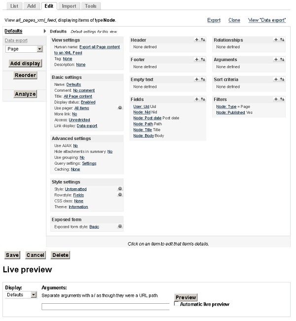
- Add a view type of "Node"
- Set filters for only Published Pages.
- Add fields for each bit of data you want to migrate, such as these common fields:
- Uid
- Nid
- Post date
- Path
- Title
- Body
- Add a "Data Export" display to the View.
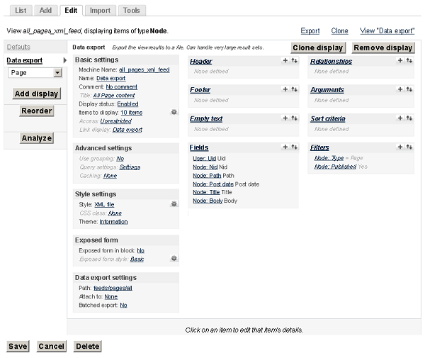- Under "Style settings", choose "XML file". For "Data export: Style options", UNCHECK "Provide as file" and DO CHECK "Transform spaces". For Transforming spaces, choose "Dashes", because XML does not process element names if they have spaces in them.
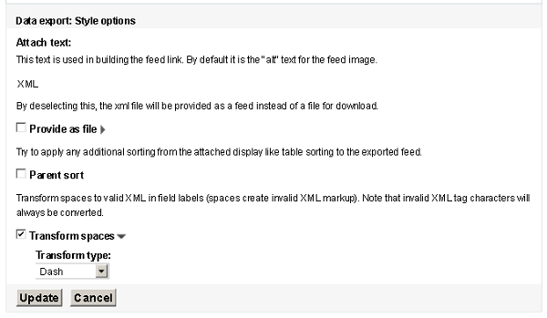 - Under "Data export settings", set a "Path" to this new feed. For example: feeds/pages/all.
- Under "Fields", choose "Node: Path" and, under "Rewriting", check "Rewrite the output of this field". Enter
[path]into the the text box, so that you will only get the internal path and not an entire URL.
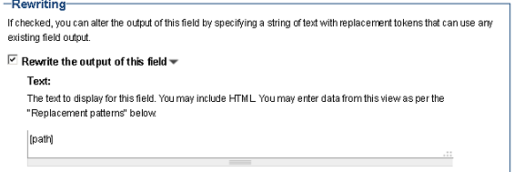 - Again under "Fields", choose "Node: Post date" and, under "Rewriting", check "Rewrite the output of this field". Enter
[created]into the the text box, so you can change the date formatting. For "Date format", choose "Custom" and enterY-m-d H:i:s Ointo the text box, this will output your date in a format that will be easier to import into the new Drupal 7 site.
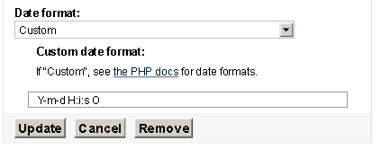 - Don't link "Title" or "User" fields to their nodes, or they will output link tags in the feed.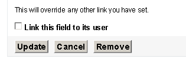
- Under "Style settings", choose "XML file". For "Data export: Style options", UNCHECK "Provide as file" and DO CHECK "Transform spaces". For Transforming spaces, choose "Dashes", because XML does not process element names if they have spaces in them.
- SAVE your View, or all your changes will be LOST!
XML feed output from Drupal 6
When you click on the link to your new Feed (http://mylivesite.gatech.edu/feeds/pages/all), you may see something like this XML code:
<?xml version="1.0" encoding="utf-8" ?>
<nodes>
<node>
<Uid>2</Uid>
<Nid>71</Nid>
<Path>/about/staff</Path>
<Post-date>2011-04-28 13:04:39 -0400</Post-date>
<Title>Our Staff</Title>
<Body><p>Our employees are brilliant! And attractive, too.</p></Body>
</node>
<node>
<Uid>2</Uid>
<Nid>81</Nid>
<Path>/about/location</Path>
<Post-date>2011-04-28 13:06:27 -0400</Post-date>
<Title>Our Location and Hours</Title>
<Body><p>More fascinating HTML goes here, including an <a href="http://mysite.gatech.edu/fakedirectory/pagename">absolute link</a> whose URL may need replaced if I am changing my site's Domain Name.</p></Body>
</node>
</nodes>
Set up your test site in Drupal 7
- Set up your new D7 site with whatever themes, modules & configurations you would like.
- Create custom content types with the same fields as you used in your Drupal 6 site. The Features module will speed up your CCK re-creation, it allows you to import a generic content type with a pre-set collection of fields and settings you often use.
- Warning: pay attention to Text Input Formats or you might strip out important HTML tags from your Body field when importing. So, allow all users (for now) permission to use the "Full HTML" text format. Likewise, set the default text format for your new Page content type to use "Full HTML".
- Install Feeds, Feeds XPath Parser, CTools & any modules they depend on.
- Warning: the Pathauto module, if enabled, will overwrite/re-create path aliases for all the pages you import, so you might want to disable Pathauto before importing.
Feed importer settings in Drupal 7
- Add a feed importer at
http://mysite.gatech.edu/admin/structure/feeds. - For "Basic settings", choose:
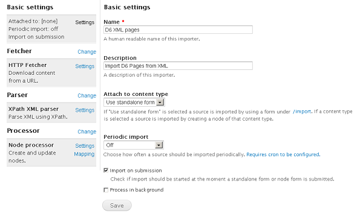- Attach to content type: "Use standalone form".
- Periodic import: "Off"
- CHECK: Import on submission
- For "Fetcher", use "HTTP Fetcher" and choose:
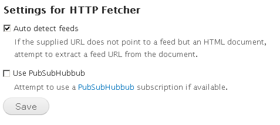- CHECK: Auto detect feeds
- For "Parser", choose "XPath XML parser".
- For "Processor", choose "Node processor" and then use these Settings:
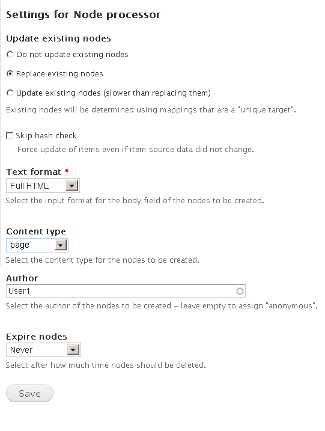- Update existing nodes: Replace existing nodes
- Text format: Full HTML
- Content type: Page
- Author: YourUserName (Note: To import page authors, you have to import your users BEFORE importing pages).
- Expire nodes: Never
- For "Node processor Mapping", add "XPath Expression" for each of these fields:
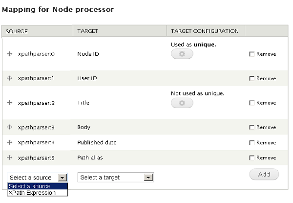- "Node ID" and make it Unique
- "User ID"
- "Title"
- "Body"
- "Published date"
- "Path alias"
- Under "XPath XML parser", type in your XSL queries like this:
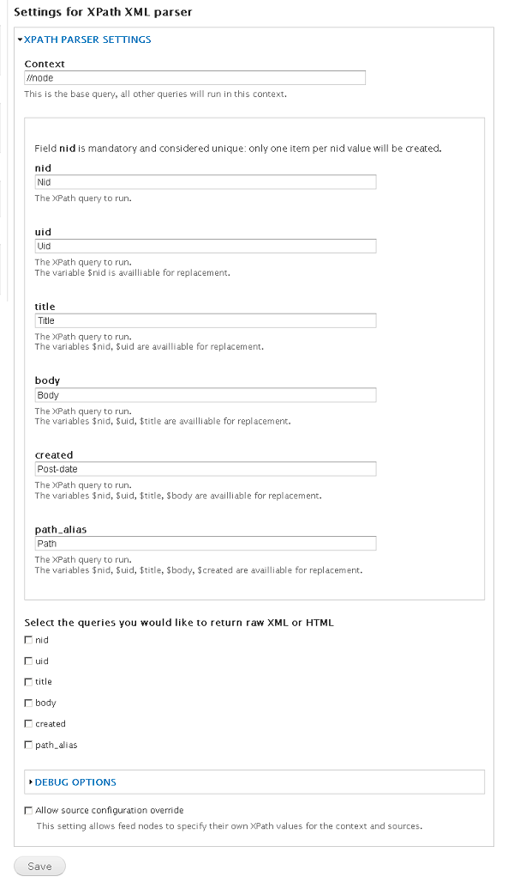- Context:
//node - nid:
Nid - uid:
Uid - title:
Title - body:
Body - created:
Post-date - path_alias:
Path - At the bottom of the page, do NOT check any boxes under "Select the queries you would like to return raw XML or HTML", as this will wrap your field data in an extra <Body> tag.
- Context:
- Be sure to Save your settings.
Using your feed importer with Drupal 7
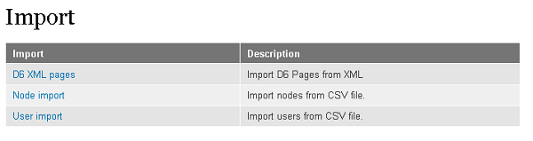
- Go to the
/importpage on your site (for example:http://mysite.gatech.edu/import) & choose the importer you just created (D6 XML pages). - In the Import > URL text box, enter the web address of the feed view you created earlier, for example:
http://mylivesite.gatech.edu/feeds/pages/alland click on "Import".
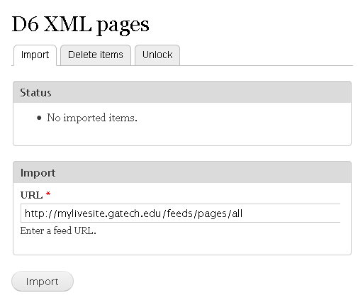 - Hopefully, you'll see a successful Status message that says something like "10 imported items total".
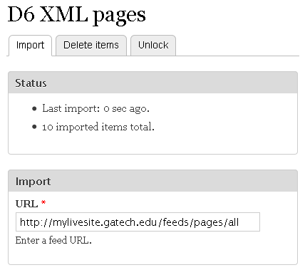
Quality assurance
- Do some sample checking of the pages you imported. Make sure your new pages are identical to those on the old site.
- Consider using Views Bulk Operations (VBO) as a great way to add tags or do mass corrections to this imported content in your new Drupal 7 site.
Comments
Robert
Date Fields not working
wondering if anybody tried this with date fields. I have 2,000 + events with date fields that I am trying to import, and they are contstantly being changed by the offest. For example, one item has a time of 11:15 am, and post import it goes to 6:15 am, no matter what I do. I checked the time zones for the importing machine and the exporting machine, and they check out to the same time zones. I tried importing with just the exact hour in military time style, without the offset, and it still offsets. I can't figure it out.
Anybody have any ideas why this is happening?
Adelle Frank
See workarounds for Dates
Sadly, this problem is known about, but not fixed.
However, there are some workarounds you can try.
Sergio
Getting an 403 Error
Great information and very useful!! However, I am getting a 403 error:
Download of http://localhost/at-d6-migration/feed/25-years-ago failed with code 403.
I am on a testing environment using Xampp. Not sure if this creates a problem.
anisaM
large file memory exhausted
Hello there, thank you for the article. I have had some success of downloading smaller content types but on large ones iam getting memory exhausted. Any ideas how to come over it.
Many thanks
Adelle Frank
Feeds import as a File instead of a URL (for large content)
One thing that has helped me, when trying to import content from sites with LOTS of pages is to set my view to export in XML, but as a FILE. Then, I set my Feeds importer to upload that file (which it can process in smaller batches, if needed, to avoid timing out).
Rob
Uploads File Attachments
Incase it's of any help to someone else. I was trying to follow this tutorial, except my content type had a File Attachment. Each time I would try to import it, I would get an error that the FID could not be null. I read all the error logs and could not find the solution. Turned out that on the Drupal 6 site where I was generating the XML from, for the File Attachment field, I needed to check "Only show listed file attachments". That solved it for me.
Great writeup! It helped me a lot.
Thanks
Leora
Stripping HTML even though not checked
I am trying to use your method. Everything worked except for the Body field. I don't have Strip HTML checked, but the XML strips the HTML tags out of the Body.
See: http://njsgc.rutgers.edu/feeds/pages/all
If you look at the one for Space and Science Links, for example, you would expect the link tags to appear. But I get nothing.
I switched that page to Full HTML (it was originallly entered with TinyMCE), but it still strips the code. Wondering if this has to do with TinyMCE messing it up.
Adelle Frank
Maybe Text Input Format
Hi, Leora:
Is it possible that the Input Format for text (for example: Plain Text) is set to a format that strips out tags?
Leora
Did it differently
In the end (this was last month), I converted the site to Drupal 7 and then used Node Export between an old version and a new one that had a new theme. I didn't end up using your method.
But thanks for responding!
M
Awesome tutorial! It worked!
Two things we wanted to mention, for any other beginners reading this.
1. In our case, we discovered YOU MUST IMPORT YOUR USERS FIRST and make sure they have permission to create pages. If you don't import your users first, the page import won't work. You can use the Feeds importer "User import" to import them, but first install the patch found at http://drupal.org/node/1570544 (it lets you map the UID from Drupal 6 to the User ID of Drupal 7, so that when you import your pages they can "find" their creators).
2. When you're setting up your feed importer settings in Drupal 7, these instructions tell you to do your Node Processor Mapping BEFORE you select the XPath XML Parser as your parser. We discovered we had to choose the parser FIRST, or else the Xpath Expression option doesn't appear in Node Processor Mapping. Just a little thing.
Other than that, I just want to say that you ROCK, Adelle! I wish this post showed up as the first Google hit for migrating or importing pages from Drupal 6 to Drupal 7, then we wouldn't have wasted so much time fumbling with Node Export and feeling totally demoralized when it kept failing to import any nodes (or importing half of our pages with a "page not found" error!) We're beginners and the way you outlined everything step by step was incredibly useful.
Completely thanks to you, we just wrapped up our first successful import! We followed your instructions exactly and imported all but 5 pages successfully.
I was really starting to think that migrating pages was going to be over my head, which felt bad because it seems like such a basic part of migration. I'm so happy that I got to do this myself, and the skills I learned from your tutorial can be transferred to other imports (users, blog posts, etc).
Thanks again from Canada!